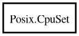

CpuSet
Object Hierarchy:

Description:
[ Compact ]
[ CCode ( cname = "cpu_set_t" , copy_function = "memcpy" , free_function = "CPU_FREE" ) ]
public class CpuSet
Content:
Static methods:
Creation methods:
Methods:
- public void @set (int cpu)
- public void and (CpuSet destset, CpuSet srcset)
- public void and_sized (size_t num, CpuSet destset, CpuSet srcset)
- public void clr (int cpu)
- public void clr_sized (int cpu, size_t num)
- public int count ()
- public int count_sized (size_t num)
- public int getaffinity (size_t num, pid_t pid = 0)
- public bool is_equal (CpuSet cs)
- public bool is_equal_sized (size_t num, CpuSet cs)
- public bool is_set (int cpu)
- public bool is_set_sized (int cpu, size_t num)
- public void or (CpuSet destset, CpuSet srcset)
- public void or_sized (size_t num, CpuSet destset, CpuSet srcset)
- public void set_sized (int cpu, size_t num)
- public int setaffinity (size_t num, pid_t pid = 0)
- public void xor (CpuSet destset, CpuSet srcset)
- public void xor_sized (size_t num, CpuSet destset, CpuSet srcset)
- public void zero ()
- public void zero_sized (size_t num)
Fields: